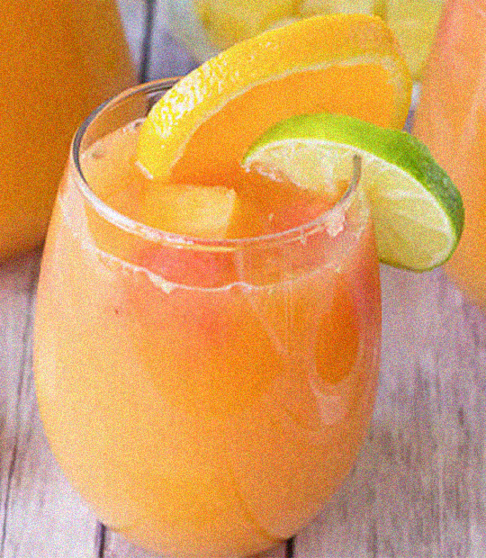

Punch express
Ingrédients pour 4 cocktails
- 6 oranges bio
- 18 cl cl de rhum
- 2 cl de sirop de grenadine
- Quelques feuilles de menthe
- Des glaçons
Préparation
- Lavez et séchez les oranges. Coupez-en une en rondelles fines. Pressez le reste en jus.
- Dans un pichet ou un saladier, versez le rhum, le sirop et le jus d'orange. Remuez bien.
- Ajoutez les glaçons et versez le punch dans des grands verres.
- Décorez de rondelles d'orange, de feuilles de menthe et servez.